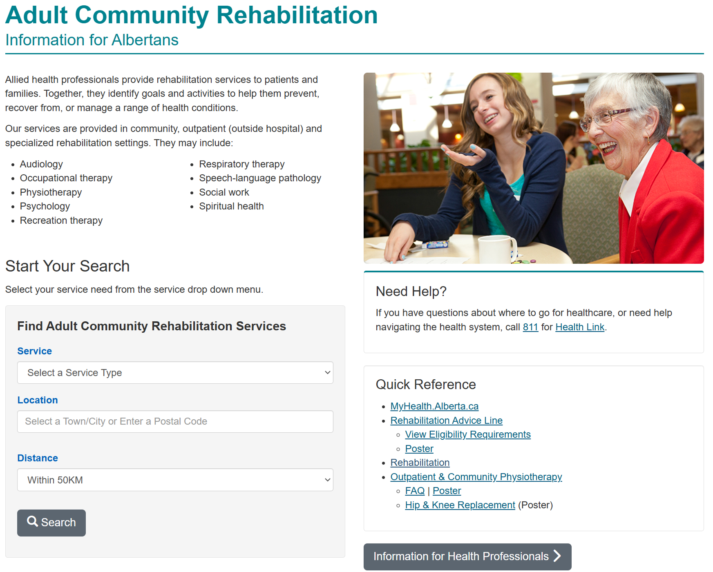

Health service listings
Service functionality upgrade
Summary
Improved the user experience of an existing service search tool by allowing for more specific categories and subcategories.

Background
My role
- Co-created an improved health service search tool to benefit specific groups based on geography, service types and sub-types.
- Accomplished this by repurposing an existing admin tool to tag and group services that are then consumed through a .JSON feed.
- Involved in ideating and prototyping, and then working with IT teams to bring the improvements to life.
- Public looking for health services
Goal
Improve current service search tool to be more flexible beyond broad clinical topic categories to better reach specific audience segments
Target users
Improvement opportunities
- Enhance current service search tool to provide more focused results with optional maps and Google directions
- Provide service search tool interface that can be branded in various ways for different websites
- Unlike manual service tables, provide dynamic service lists that update automatically
Screenshots
Before
Manual lists are complex, difficult to maintain, and don't update automatically.

After
Dynamic lists of services are simplified, easier to search, and update automatically.

Results and outcomes
Learnings
- I learned that existing tools can be improved greatly by reimagining how they can work.
- When ideas are difficult to imagine and explain, creating mockups can demonstrate to stakeholders and technical teams how things could work.